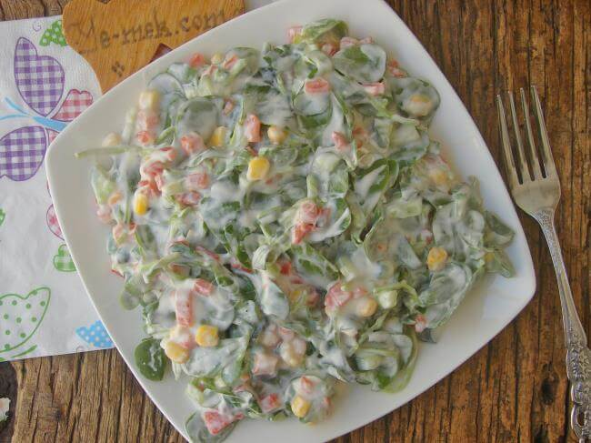

Yemek Tariflerine Hoş Geldiniz
Yoğurlu Semizotu Salatası
Malzemeler
- 1 demet semizotu
- 1,5 su bardağı süzme yoğurt (isteğe göre normal yoğurt da kullanılabilir)
- 1 diş sarımsak
- 2 yemek kaşığı zeytinyağı
- Tuz (damak zevkine göre)
- Birkaç dal taze dereotu veya maydanoz (isteğe bağlı)
- Yarım çay bardağı soğuk su (kıvam için, isteğe bağlı)
- Tuz
Üzeri İçin
- Pul biber, ceviz içi veya zeytinyağı
Yapılışı
- Semizotunu ayıklayın, bol suyla güzelce yıkayın ve yapraklarını ayırın.
- Bir kaba alın, fazla büyük parçaları elinizle koparabilirsiniz.
- Sarımsağı rendeleyin veya ezin.
- Ayrı bir kapta yoğurt, sarımsak, tuz ve 2 yemek kaşığı zeytinyağını karıştırın.
- Hazırladığınız yoğurtlu karışımı semizotlarının üzerine ekleyin ve karıştırın.
- Servis tabağına alın, üzerine pul biber, ceviz içi veya az zeytinyağı gezdirin.
👉 Soğuk servis edilirse daha lezzetli olur.